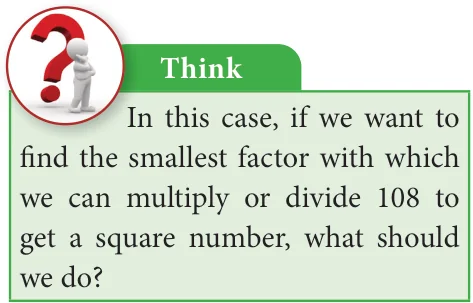
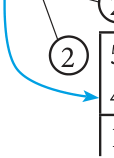
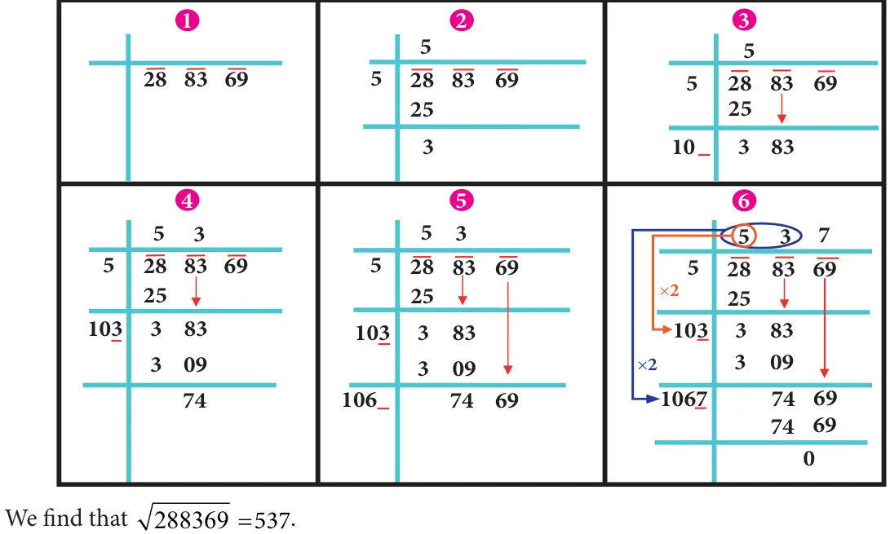
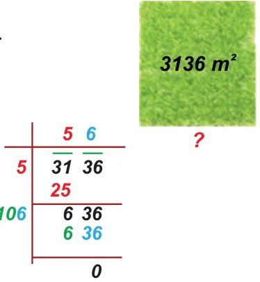
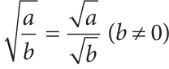
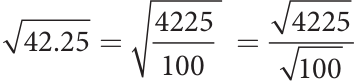

Squaring a number is another mathematical operation just like addition, subtraction, multiplication etc., Most mathematical operations have 'inverse' (meaning 'opposite') operations. For example, subtraction is the inverse of addition, division is the inverse of multiplication etc., Squaring also has an inverse operation namely finding the Square root.
The square root of a number n, written \(\sqrt{n}\) (or) \(n^{1/2}\) , is the number that gives n when multiplied by itself. For example, \(\sqrt{81}\) is 9, because \(9 \times 9 = 81\).
In the adjacent table, we have square roots of all the perfect squares starting from 1 to 100.
If \(11^{2} = 121\), what is \(\sqrt{121}\)? If \(529 = 23^{2}\), what is the square

root of 529? If we know that \(324 = 18^2\), we can immediately tell that \(\sqrt{324}\) is 18.
We have, \(1^2 = 1\) and so 1 is a square root of 1. Similarly,
\((-1)^2 = 1\). So, \((-1)\) is also a square root of 1.
\(2^2 = 4\) and so 2 is a square root of 4. Similarly, \((-2)^2 = 4\). So, \((-2)\) is also a square root of 4.
This continues as \(3^2 = 9\) and so 3 is a square root of 9.
Similarly, \((-3)^2 = 9\). So, \((-3)\) is also a square root of 9. The above examples suggest that there are two integral square roots for a perfect square number. However, in working out the problems, we will take up only positive integral square root. The positive square root of a number is always denoted by the symbol \(\sqrt{\phantom{x}}\). Thus, \(\sqrt{4}\) is 2 (and not \(-2\)). Also, \(\sqrt{9}\) is 3 (and not \(-3\)). We have to remember that this is a universally accepted notation.
1.7.1 Square root through Prime Factorisation
Study the following table giving the prime factors of numbers and those of their squares.

Look at 6 and its prime factors. How many times do 2 and 3 occur in 36 in the list? Now, look at its square 36 and its prime factors. How many times do 2 and 3 occur in 36 here?
Repeat the above task in the case of other numbers 8, 12, and 15 also. (We may also choose our own numbers and their squares). What do we find? We find that,
The number of times a prime factor occurs in the square of a number = twice the number of times it occurs inthe prime factorisation of the number.
We use this idea to find the square root of a square number. First, resolve the given number into prime factors. Group the identical factors in pairs and then take one from them to find the square root.
Example 1.22
Find the square root of 324 by prime factorisation.
Solution:
First, resolve the given number into prime factors. Group the identical factors in pairs and then take one from them to find the square root.
Now, \(324 = 2 \times 2 \times 3 \times 3 \times 3 \times 3 = (2 \times 3 \times 3)^2\)
\(\sqrt{324} = 2 \times 3 \times 3 = 18\)
Example 1.23
Find the least number by which 250 is to be multiplied (or) divided so that the resulting number is a perfect square. Also, find the square root in that case. Solution:
Here, \(250 = 5 \times 5 \times 5 \times 2\)
Here, the prime factors 5 and 2 do not have pairs. Therefore, we can either divide 250 by \(10 (5 \times 2)\) or multiply 250 by 10.
- If we multiply 250 by 10, we get \(2500 = 5 \times 5 \times 2 \times 5 \times 2\) and therefore the square root of 2500 would be \(5 \times 5 \times 2 = 50\).
- If we divide 250 by 10, we get 25 and in this case we get \(\sqrt{25} = 5\).
Example 1.24
Is 108 a perfect square number?

Solution:
Here, \(108 = 2 \times 2 \times 3 \times 3 \times 3 2 54\)
\(= 2 \times 3 \times 3 3 27\)
Here, the prime factor 3 does not 3 9 have a second pair. Hence, 108 is not a 3 3 perfect square number. 1
1.7.2 Finding the square root of a number by Long Division Method
When we come across numbers with large number of digits, finding their square roots by factorisation becomes lengthy and difficult. Use of long division helps us in such cases. Let us look into the method with a couple of illustrations.
Illustration 1
Find the square root of 576 by long division method.
Step 1:
and the remaining digit (if any) is called a period. Put a bar over every pair of digits Group the digits in pairs, starting with the digit in the unit's place. Each pair 5 76 starting from the right of the given number. If there are odd number of digits, the extreme left digit will be without a bar sign above it. So, here we have 5 76
Step 2:
Think of the largest number whose square is equal to or just less than \(2 \times 2\) the first period. Take this number as the divisor and also as the quotient. The left extreme number here is 5. The largest number whose square is less than or 5 76 equal to 5 is 2. This is our divisor and the quotient.

Step 3:
Bring 76 down and write it down to the right of 5 76 the remainder 1. Now, the new dividend is 176. 1 76
Step 4:
To find the new divisor, multiply the earlier quotient (2) by 2 (always) and write it leaving a blank space next to it.
Step 5:
The new divisor is 4 followed by a digit. We should choose this digit next to 4 such that the new quotient multiplied by the new divisor will be less than or equal to 176.
Step 6:
Clearly, the required digit here has to be 4 or 6. (Why?)
When we calculate, 46 6 276 whereas .

Therefore, we put 4 in the blank space and write 44 4 subtract to get the remainder 0 and the quotient at the top, that is 24 is the \(\frac{1 76}{0}\) square root of 576. 576 24 .
Illustration 2
In the following example, follow the figures one after another and try to understand what each figure explains, the stage by stage and the gradual computation of computing the square root of 288369.

Example 1.25
Find the square root of 459684 by long division method.
Solution:
By long division method, we can find the square root of 459684 as given below:

459684 678
Example 1.26

The area of a square field is 3136 m . Find its perimeter.
? Solution:
Given that the area of the square field \(= 3136 m\) .
\(\therefore\) The side of square field \(= 3136 = 56 m \therefore\) The perimeter of the square field \(= 4 \times\) side
\(= 4 \times 56 = 224 m\)
Example 1.27
A real estate owner had two plots, a square plot of side 39 m and a rectangular plot of dimensions 100 m length and 64 m breadth. He sells both of these plots and acquires a new square plot of the same area. What is the length of side of his new plot?
Solution:
The transactions can be visualised as follows:

1.7.3 Number of digits in the square root of a perfect square number
We made use of bars to find the square root in the division method. This marking bars help us to find the number of digits in the square root of a perfect square number. Observe the following examples (with bars shown as if we compute square root by division procedure).

Hence, we conclude that the number of bars indicates the number of digits in the square root.

1.7.4 Square root of decimal numbers
To compute the square root of numbers in the decimal form, we simply follow the following steps:
Step 1:

Make even number of decimal places even by affixing a zero on the extreme right of the digit in the decimal part (only if required).
Step 2:
The number has an integral part and a decimal part. In the integral part, mark the bars as done in the case of division method to find the square root of a perfect square number.

Step 3:
In the decimal part, mark the bars on every pair of digits beginning with the first decimal place.

Step 4:
Now, calculate the square root by long division method.
Step 5:
Put the decimal point in the square root as soon as the integral part is exhausted. \(\therefore \sqrt{42.25} = 6.5\)
1.7.5 Square root of product and quotient of numbers
For any two positive numbers a and b. we have


(i) \(\sqrt{ab} = \sqrt{a} \times \sqrt{b}\) and (ii) \(\sqrt{\frac{a}{b}} = \frac{\sqrt{a}}{\sqrt{b}}\) \((b \neq 0)\)
Example 1.28
Find the value of \(\sqrt{256}\).
Solution:

Example 1.29
Find the value of \(\sqrt{42.25}\).
Solution:

We can write this as
Now, it is easy to compute the square root of the whole number 4225 by long division method as \(\sqrt{4225} = 65\) and so, we now get \(\sqrt{42.25} = \sqrt{\frac{4225}{100}} = \frac{\sqrt{4225}}{\sqrt{100}} = \frac{65}{10} = 6.5\). This is another way of tackling problems of square root of decimal numbers without any botheration of decimal symbol.
Try these
Using this method, find the square root of the numbers 1.2321 and 11.9025.
Example 1.30
Simplify: (i) \(\sqrt{12} \times \sqrt{3}\) (ii) \(\sqrt{\frac{98}{162}}\)
Solution:
- Remembering the rule, a b ab (ii) Remembering the rule, \(\frac{a}{b}\) ab (b 0)
\(12 3 12 3 36 6 6 \frac{98}{162} \frac{249}{281} \frac{49}{81} \frac{7}{92} \frac{7}{9}\)
Example 1.31

Simplify: (i) \(\sqrt{2\frac{7}{9}}\) (ii) \(\sqrt{1\frac{9}{16}}\)
Solution:
- \(\sqrt{2\frac{7}{9}} = \sqrt{\frac{25}{9}} = \frac{\sqrt{25}}{\sqrt{9}} = \frac{5}{3} = 1\frac{2}{3}\)
- \(\sqrt{1\frac{9}{16}} = \sqrt{\frac{25}{16}} = \frac{\sqrt{25}}{\sqrt{16}} = \frac{5}{4} = 1\frac{1}{4}\)
- \(4, \sqrt{14}, 5\)
- \(7, \sqrt{65}, 8\)
Remark: In the case of the (ii) problem one may be tempted to give the answer immediately as \(1\frac{3}{4}\), but this is not correct since you have to convert the mixed fraction into an improper fraction and then use the rule \(\sqrt{\frac{a}{b}} = \frac{\sqrt{a}}{\sqrt{b}}\) \((b \neq 0)\)
1.7.6 Approximating square roots
Try these
Write the numbers in ascending order.
Can you write the given numbers \(\sqrt{40}\), 6 and 7 in ascending order? Here 40 is not a square number and so we cannot determine its root easily. However, we can estimate an approximation to \(\sqrt{40}\) and use it here.
We know that the two closest squares surrounding 40 are 36 and 49.
Thus, \(36 < 40 < 49\) which can be written as \(6^2 < 40 < 7^2\).
Considering the square root, we have \(6 < \sqrt{40} < 7\).